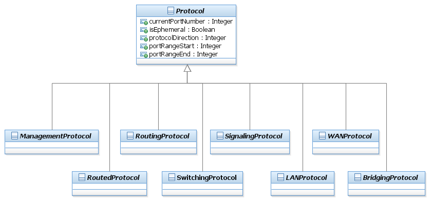

SID Models::Resource Domain::Resource ABE::_Resource Addendum Figuers::Figure LR.29 - Overview of the Top-Level Protocol Classes Diagram Figure LR.29 - Overview of the Top-Level Protocol Classes A protocol is a formal set of rules and conventions that governs how two entities exchange information (usually over one or more types of network media). This is an abstract base class for representing protocols that can be managed. This class represents a convenient aggregation point for defining how protocols are managed and used. The Figure below shows the structure of the Protocol class hierarchy.The purpose of the taxonomy is to form an extensible classification structure to enable contributions from other TMF programs and other industry standards to be added. Note that there is a large amount of disagreement in the network management space over how to model protocols. By building taxonomy to normalize how different protocols are used, some of this confusion will be cleared up. Note also that this taxonomy specifically avoids any use of “layers”, since multiple protocol families (e.g., ATM and MPLS) do not fit neatly into a “layered” classification scheme.A ManagementProtocol is an abstract superclass for protocols that are dedicated to exchanging management information between network devices. This type of protocol is an application layer protocol, and is used for configuring, monitoring, and gathering information about devices. An example of this type of protocol is SNMP.RoutingProtocols is an abstract base class for representing different types of routing protocols that can be managed. Routing protocols are used to determine how information is routed (e.g., how it traverses an intermediate system). Examples of this type of protocol include OSPF, IS-IS, and BGP.RoutedProtocols is an abstract base class for representing different types of routed protocols that can be managed. Routed protocols are those protocols that can be routed by a router. Specifically, the router must be able to interpret the logical internetwork as specified by that routed protocol. This class represents a convenient aggregation point for defining how routed protocols are managed and used. Examples of this type of protocol include IP and IPX.In a network that uses standard routing, frames pass from a source to a destination in a hop-by-hop basis. Transit routers look at each frame’s Layer 3 header and perform a route table lookup to determine the next hop toward the destination. This means that layer 2 information is effectively ignored. A SwitchingProtocol replaces the above hop-by-hop method with a method to specify a path in the network. This path may be based on any number of different attributes, such as cost of the path and QoS. The most popular implementation of this approach is MPLS.LANProtocols operate at the lowest two levels of the OSI model (i.e., physical and data link) and are used to define communications over different types of local area media. Bridging Protocols operate at the data link layer of the OSI model and are used to define communications over different types of homogeneous and heterogeneous local area networks. Examples of this type of protocol include Ethernet andToken Ring.WANProtocols operate at the lowest three levels of the OSI model (i.e., physical, data link, and network) and are used to define communications over different types of wide-area media. Examples of this type of protocol include ATM, Frame Relay, and PPP.SignalingProtocols is an abstract base class for representing different types of signaling protocols that can be managed. Signaling protocols are used to convey information along a specific path. This class represents a convenient aggregation point for defining how signaling protocols are managed and used. Examples of this type of protocol include RSVP and COPS.Each of the Protocol subclasses described in the Figure above has multiple subclasses, but these are system-oriented and beyond the scope of this (business-oriented) document.

Properties:
View
Name
Figure LR.29 - Overview of the Top-Level Protocol Classes